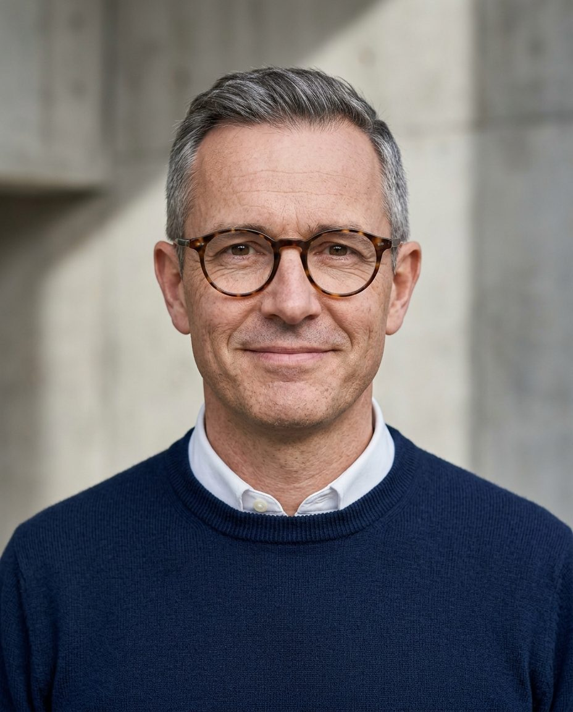

0 — 10 m
01 · Civic
Al Qudra Desert Library
A public library half-sunk into the desert, with courtyards that keep reading rooms ten degrees cooler without extra cooling.
Civic and residential buildings that work with climate, light and the people who use them, in London and the Gulf.

Four projects from a twenty-five-year practice. Plans simplified for clarity.
A public library half-sunk into the desert, with courtyards that keep reading rooms ten degrees cooler without extra cooling.
212 homes around shared gardens on a former dockyard, with every flat dual-aspect for daylight and cross-ventilation.
A timber lattice pavilion for a summer arts festival, assembled in nine days and reused as a school canopy.
How the studio approaches every brief, large or small.
Orientation, shade and thermal mass before any machinery. The best kilowatt is the one never used.
Every room is drawn with its daylight at noon in June and in December.
Structures planned for second and third lives, so buildings outlast their first use.
Thomas takes on civic, education and residential commissions, and is open to design director roles.